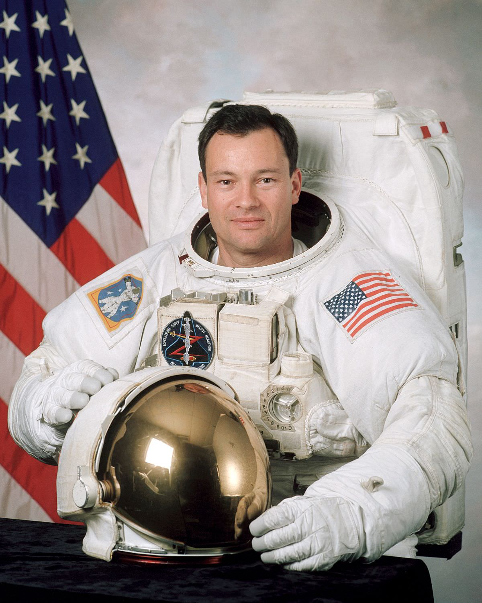
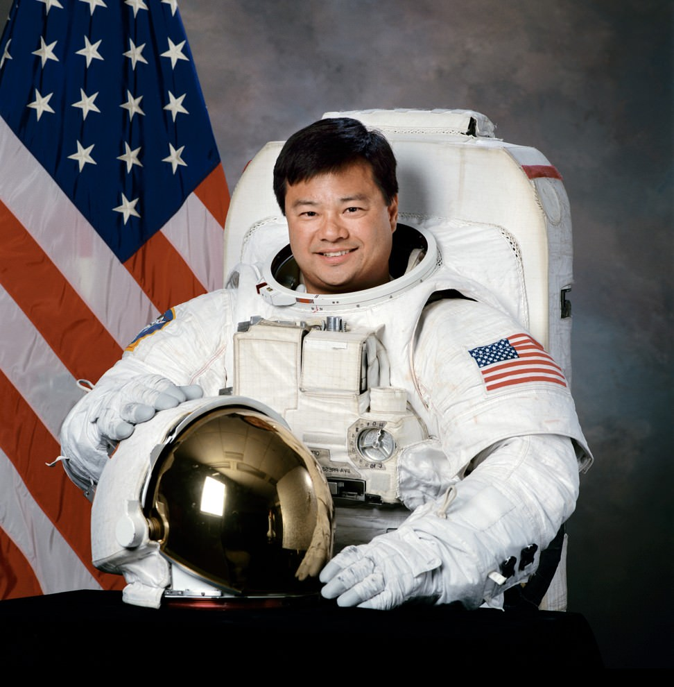
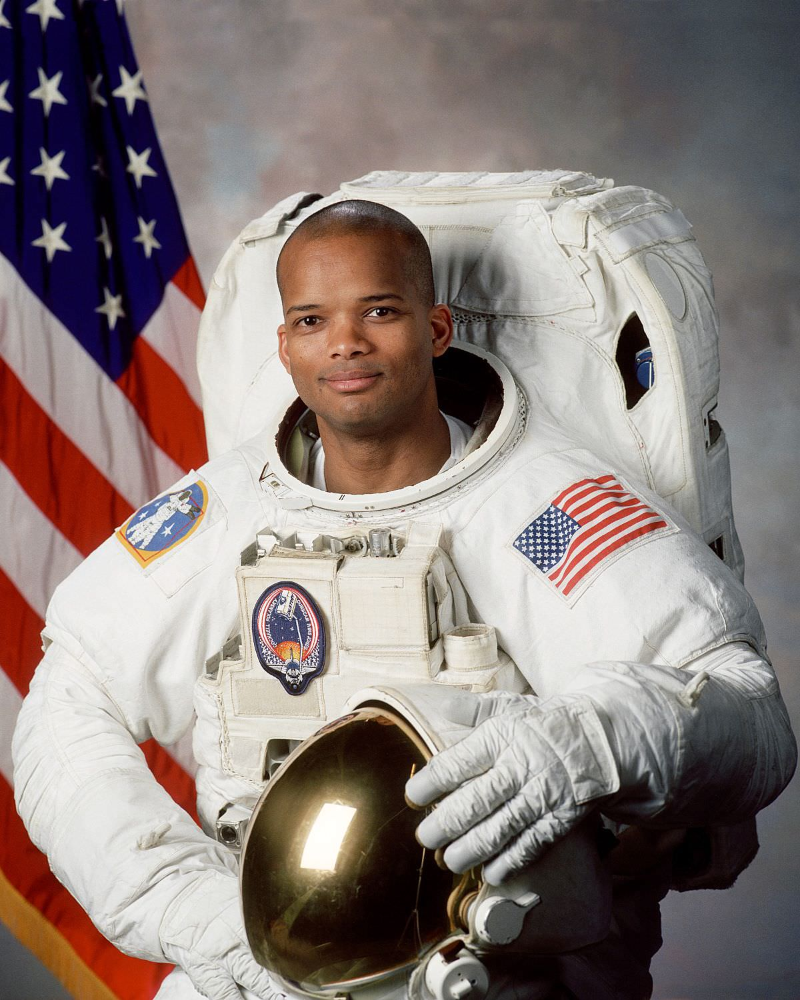
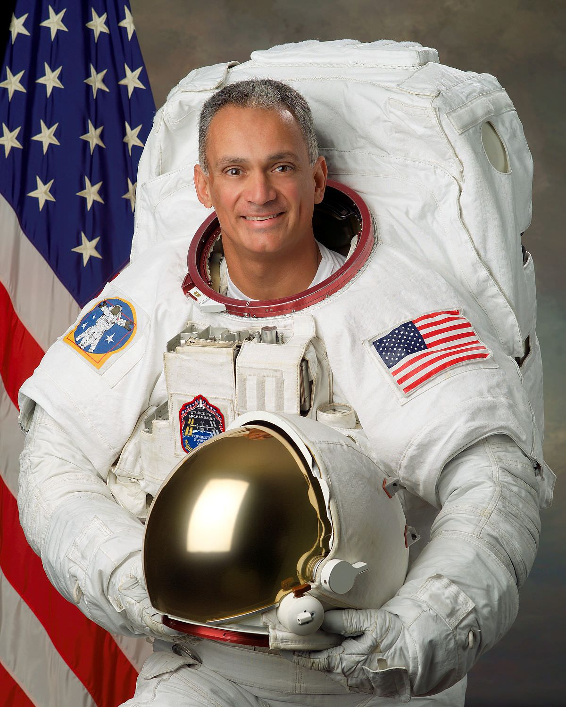
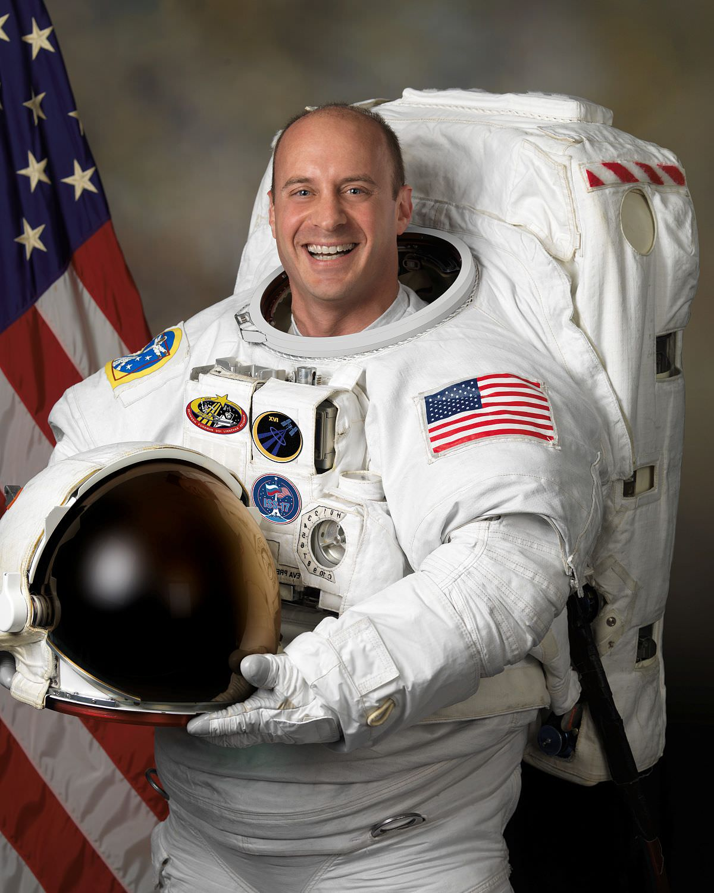
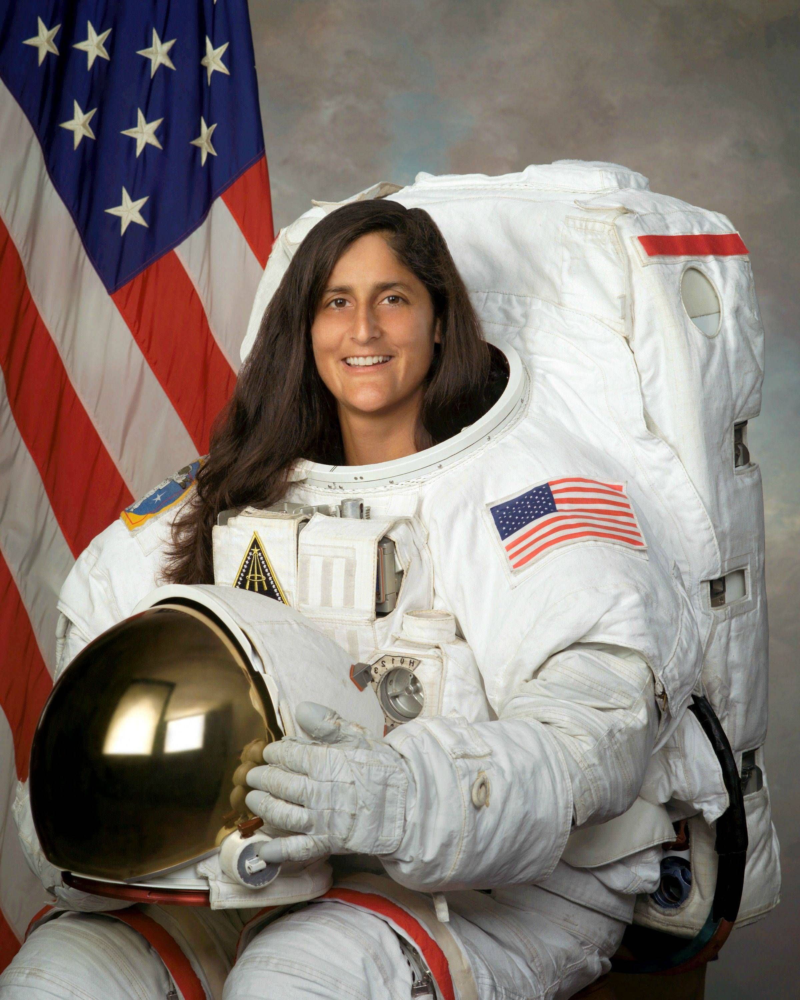
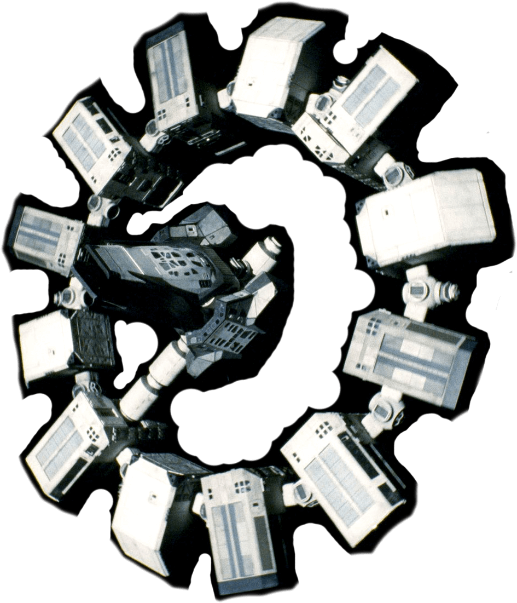
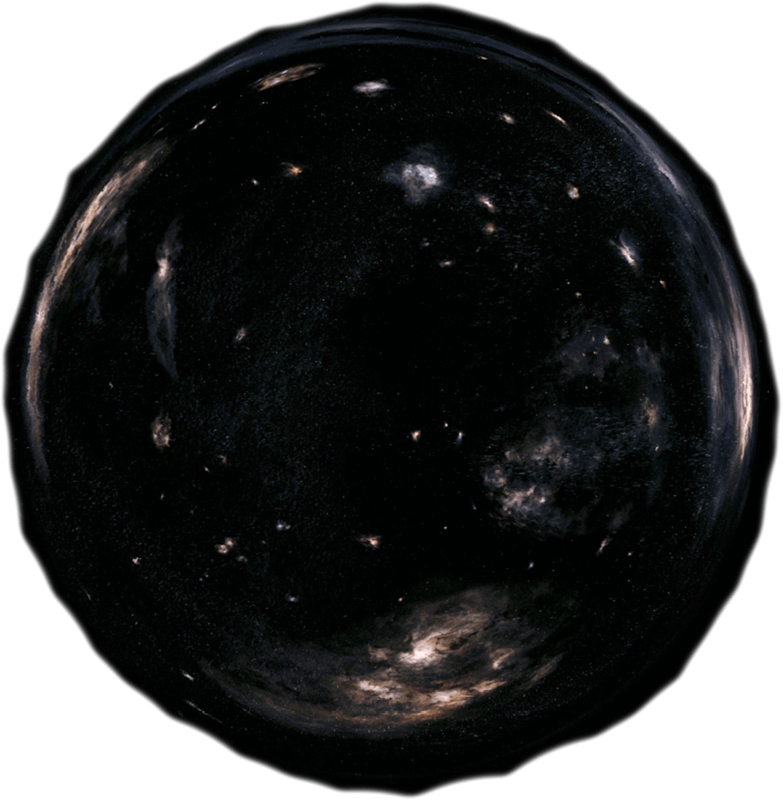

Chapter 1
Goodbye Earth
When they announced it, people couldn't believe that we had possibly found what we were seeking for hundreds of years. The possibility to explore beyond our world, beyond our solar system, even beyond what our imagination could picture. Yet, we were right there, at the verge of a new chapter, were everything is possible again. People are usually scared of the unknown, but this time was different. This time, the whole world were watching, eagerly waiting... Hopping to get the answers they always wanted.
Even if people didn't think it could be possible to live this kind of turn in human history, everyone knew that crazy things would happen in the next few years, especially with space travel. With guys like Elon Musk, Kip Thorne and over pioneers in space travel and physics, the tremendous advance in technology would eventually meet their visions.
When they finally discovered the possibility of travelling through the wormhole, NASA and SPACE X teamed up to create a program designed to build a spaceship capable of travelling through space for years with enough equipment and technology to adapt to the most challenging and dangerous situations. They provided materials to collect scientific data, communicate through long distance and set up colony if possible. They recruited and intensively trained a team of the best astronauts on the planet. A team of six brave men, that will be remembered for years to come...
-

John Miller
Pilot
-

Lee Hathaway
Co-Pilot
-

Mike Gramsy
General Engineer
-

Floyd Patterson
Aerospace Engineer
-

Mark Johnson
Engineering Technician
-

Mia Kowalsky
Biologist
A couple of hours before leaving, I remember that each one of them left a quick video message on the Internet, speaking about how they felt to the world about this expedition, saying a last goodbye to their families. I remember something that the captain said after saying goodbye to his wife Laura and his two kids, Sophia and Michael. He said...
Don't let yourself think that you know enough. Because that's when we are in the dark, that we seek the light. Because that's when we are sad, that we seek joy and cheerfulness. Because that's when we don't know, that we seek to know.
A couple of hours later and it finally came true, the whole world was in front of his computer screen, waiting for the exact same thing. Billions of souls' hopes and dreams aiming at on place at the same time. And 10, 9, 8, 7, 6, 5, 4, 3, 2, 1...
Everything went perfectly well, the lift-off was a success, navigation and communications with earth were operational. And as the team was preparing for the next chapter, they were left with quite an unforgettable view.
Chapter 2
The long nap
A few moments after leaving Earth, they had to connect the spaceship to a bigger station, sent into space three months earlier, with all the equipments for the journey, they called it: The Explorer. They successfully connected the two ships and as soon as they arrived, they reported their status to Earth and stated to prepare themselves for hibernation.
Two years, three months and thirty-two days was the time for the spaceship to approach the wormhole. Given the fact that they didn't knew how long they will be gone and that they had limited resources, they decided to use the hibernation cells in order to save as much resources as possible. Hibernations is not harmful to the human body but can be traumatising for the mind, but they all agreed to take the risk.
They all took a few hours to prepare themselves, laughed and ate together, talked about how much they will miss their families and their lives on Earth, and what this mission meant for them. Space is the strangest place of our reality, there is you and your crew, your ship, and after that, silent darkness... infinite void, with nothing that could not kill you in seconds. Yet, they were driven by one single feeling, this one feeling that kept humanity going for thousands of years, the need to explore.
Chapter 3
Into the unknown
Everyone just woke up when they could already see the thing. The wormhole was spheric, almost undistinguishable beyond all the stars but sometimes, glimpses of light were flashing out of it, making it fascinating to contemplate. Many theories were made down on Earth, which many said that, by bending the spacetime continuum, a wormhole could connect extremely long distances such as billion light years, different universes or different points in time. And they were on the verge of finding out, ready to dive into the unknown.
Everybody was at his post, hearts beating out of their chest seeing this giant black mass getting bigger and bigger in front of their eyes. Then, the captain asked if everyone was ready, to finally dive in with a big acceleration. They quickly started to feel heavy turbulence, flashes of light were coming form everywhere making it difficult to see anything. Everything they could see seemed distorted and moving very fast. Big waves of energy came crushing down on them, loud noises shaking up the all ship.

When they finally made it to the over side, it was like nothing never append. The spaceship instantly stopped vibrating, all navigation commands came back to their control, and everything was again, silent. They started analyzing the neighborhood with high-frequency radars, optical reflecting telescopes and over high-tech gear in order to see if they could find anything worth exploring. They discovered and studied three massive planets trough a period of approximately 3 months.
The first and closest one they discovered was a highly promising planet, with possibly a chance to support life due to the interesting data they collected in the previous couple of months, they called it Cephei. The second one was Corona, which was also very promising, especially due to strange fluctuations of energy coming out from it. And finally, they had found Leonis, which they managed to get only so much data from it due to its extremely long distance. The activity and atmosphere of Leonis were something they had never seen before and could very much be the context of an extraterrestrial life form. But the only way to get to Leonis and make it back to Earth would be to hibernate approximately three years into a galaxy still unknown in order to ration out as much resources as possible. If they opted for the other ones, they could do both without worrying about running out of fuel or supply. After reflection, they voted to go first to...